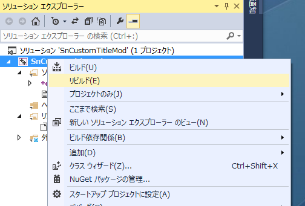

シナリオ作者にとって、シナリオタイトルやシナリオ詳細文を変更したいという要望はあるでしょう。
これらはScenarioModでも変更可能ですが、ScenarioModは、1人1つであるため、パッケージとしては配布しずらい、という問題があります。
又、ScenarioModを利用していたとしても、、「シナリオ」というひとつのパッケージとしてScenarioModと分離しておきたいという要望もあるかと思います。
そこで、「シナリオタイトルやシナリオ詳細文の変更を目的とする一般Modのひな形」として、SnCustomTitleModを用意しました。
さて、では、「全てを解凍し」、「SnCustomTitleMod.sln」をVC++で開きましょう。
より新しいVisual Studioのバージョンを利用している場合、以下のような、プロジェクト変換メッセージが出ると思いますが、問題ありません。
図のように「dllmain.cpp」のファイルを開きます。
画面上部の「Release」とある部分が「Debug」となってしまっている場合は、「Release」を選びなおしましょう。
ソースは簡単なものではありますが、これでもプログラム未経験者にとっては「グッとくる」ものがあるかと思います。
しかし、気にする必要はありません。
このひな形については、「見様見真似」で大丈夫なようになっています。
まず、タイトル名の変更ですが、以下の部分に着目して、日本語を編集します。
最長でも全角１５文字までです。
元々天翔記にあるタイトル名をそのまま採用する場合は、NULLと記載します。
次に、詳細説明文の変更ですが、以下の部分に着目して、日本語を編集します。
ここまで日本語が見えていれば、「なんとなく見様見真似」でコピペしたり編集すればなんとかなるでしょう。
さて、編集が終わったらリビルドしてみましょう。
ソリューションを右クリックすれば、ソリューションのリビルドができます。

エラーが出ずに、無事にリビルドできたでしょうか？
エラーが出た場合は、日本語編集時のコピペ等で何か間違っていますので見返しましょう。
次に、バージョンや著作権表記を編集します。
ソリューションエキスプローラーで、「SnCustomTitleMod.rc」を右クリックし、コードの表示を選択します。
すると、以下のようになりますので、「
さて、再度リビルド(もしくはビルド)してみましょう。
これで、SnCustomTitleMod.dll が完成しました。
で、問題は、その肝心のSnCustomTitleMod.dllはどこに出来上がったんだ？
ということなのですが、以下のようにソリューションから右クリックすれば、
｢エキスプローラでフォルダを開く￥
というのがあります。
ここで開いて、｢Release｣の中をみてみましょう。
その「SnCustomTitleMod.dll」を｢天翔記｣フォルダにコピーすればＯＫです。
天翔記を起動してみましょう!!
変更が確認できましたか？
最後に、この「SnCustomTitleMod.dll」という名前を、
「Sn******Mod.dll」
というように好きな名前に変更しましょう。
少なくとも最後に「Mod.dll」という文字列が含まれている必要があります。
「SnCustomtTitleModというのはひな形名」ですので、
「SnCustomTitleMod.dllという名前で配布しない」ようにしましょう。
以上で、SnCustomTitleModの編集・ビルドの方法の説明を終了します。
お疲れ様でした。